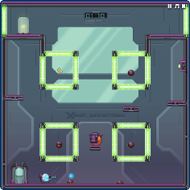

Hot on the heels of our screenshot the other day we have our next new game release
Test Subject Blue!
You play as a blob trapped in a glass labyrinth…..why? Well it’s some kind of Lab experiment!
The core mechanic in the game involves wrapping. Remember when you played old arcade games like bubble bobble or more recently our Twinshot games and you go off one edge of the screen only to come back on the other side?
Well it’s kind of like that only taken further…..these ‘wrappers’ can be within the screen which leads to some much more head scratching problems.

To aid you on getting to the end of each test you have a handy shooter which fires small projectiles which you can use to take out enemies and trigger switches….watch out though that you don’t have them wrap and hit yourself!
Also be sure to use our new Facebook and Twitter links to Share and Tweet the news to your friends and followers